Curves Introduction
Curves Introduction contains these sections:
What are curves and curve files?
Curves and Curve files refer to the recorded sensor readings for process control data of specific modules.
These recorded readings are used to set new limits for new assays or change existing limits. These sensor readings are also useful in diagnosing and confirming issues. Flags are generated when the readings or calculated limits are outside the acceptable limits.
Limits are set for each specific assay to account for differences in formulation and volume needs. The process limits are saved in the assay definition or “sequence” file. These files are added/removed with the Diagnostic Assay Software installer. If inspection of process limits is required, this can be done by opening the sequence file. These files are located on the local workstation directory: C:\Panther\Software\PC\bin\input. Best practice is to copy a set and inspection on your personal computer. If files are accidently corrupted, repair or reinstall assay software.
Where are curve files stored?
Curves refer to the folder where the curve files are stored. These files are located locally on the workstation, and persist until the workstation is reimaged.
When Send Logs is performed across a given time period, the curves are retrieved, and packaged with the logs package. The data are retrieved from the following location on the local machine:
C:\Panther\Software\PC\Persistance\Curves\YYYY_MM_DD_HH-mm-ss
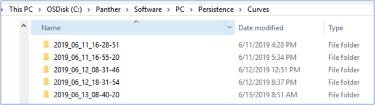
Figure 1 – Example of curve folders containing curve data.
Curve files are the files within the timestamped folders. These files end in *.curve file extension. As of software version 7.2.1.37, a Panther Fusion Plus with RTFs will generate the following curve files.
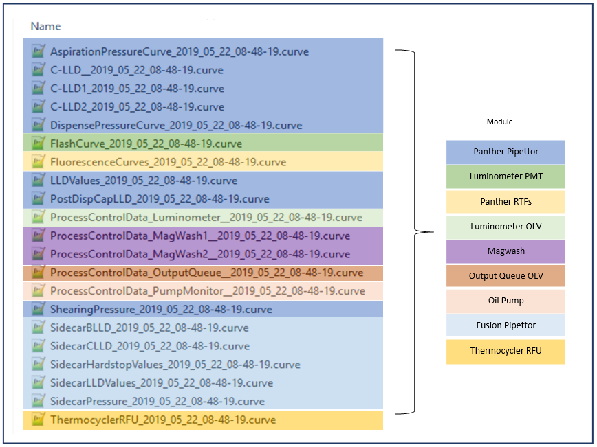
What is in a curve file?
Curve files contain sensor readings of process control data.
Curve data is only recorded when the process step has completed.
Errors that occur during the process can result in no data generated as the command is interrupted before data is sent from the module to COP and back to the PC.
Image below shows an example of curve file content and file structure using Notepad++. Notepad++ is a text editor program like Notepad.
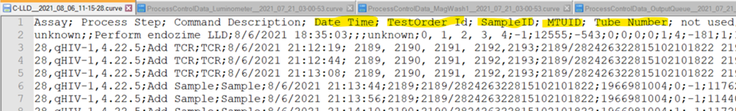
Line 1 is the header and explains what is in each column.
All curve files should have in the header:
- Date Time or Timestamp: month/day/year hh:mm:ss (this is in UTC time, most will need to adjust for local time zone).
- TestOrder Id: test order value assigned to test order.
- SampleID: sample id that is physically assigned to sample tube.
- MTUID: MTU barcode value.
- Tube Number. Tube number in MTU.
The remaining header data is unique to the curve file.
For additional information, refer to the module curve data entry.
Lines 2 and on: actual process control data. if line 2 is blank, no information was recorded.
How do I view curve files?
Curve files are delimited files and can be viewed using a variety of methods.
- Text editor, such as Notepad, or Notepad++.
- Specialized program, such as Panther Dashboard, or CurveTrend.
- Spreadsheet program, such as Excel.
Note: Always unzip the compressed *.gpz file before manipulating files with other programs.
To open file in text editor, right-click on file, then click Open with... in pop-up menu.
Graphing with CurveTrend
Refer to module curve data entry for more in-depth information.
Launch CurveTrend.
Data Tab
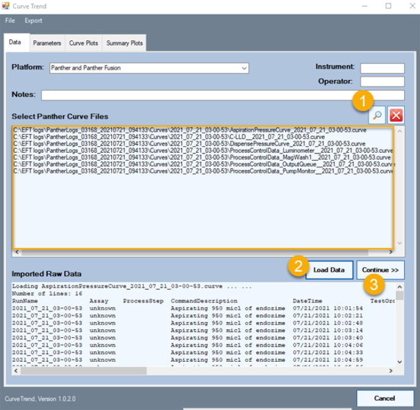
To view data in curve file:
- Use magnify glass to select files (can also drag and drop directly into the region as shown).
- Click Load Data.
- Click Continue >>.
Parameters Tab
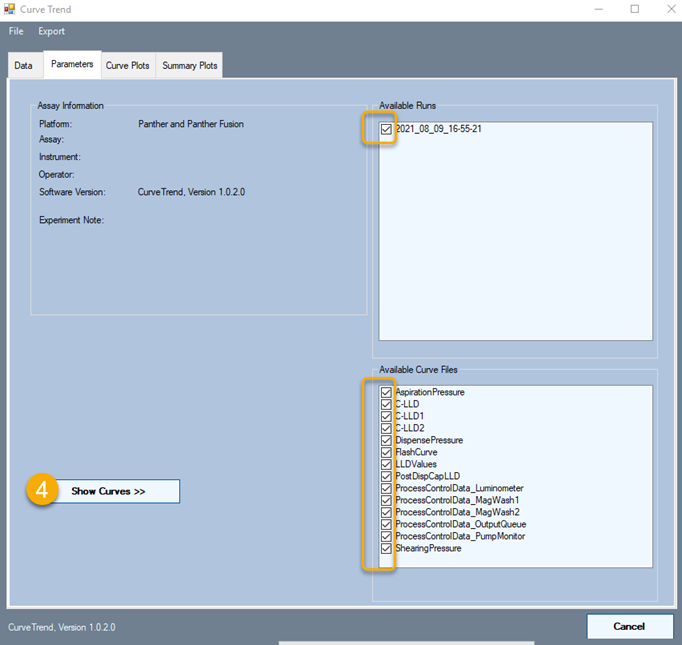
-
Click Show Curves >>.
You can also uncheck Available Runs, and select Available Curve Files if desired.
Curve Plots Tab
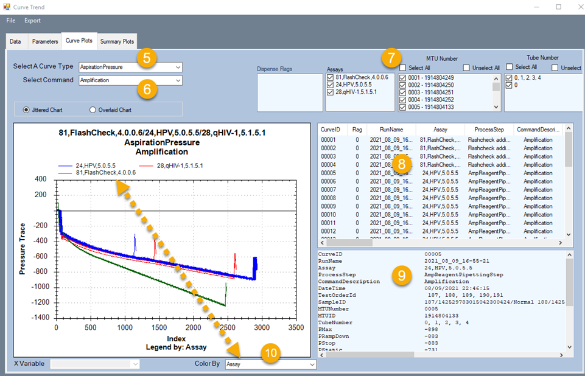
- Select A Curve Type: choose relevant process curve for your issue.
- Select Command: different commands measure different things, reagents, or steps.
- These are additional ways to sort data. Assay, MTU number and Tube number are always available. While Flags, Sensors are file dependent.
- Curve column header (CurveID,|Flag|RunName|Assay|ProcessStep|…) with process data.
- Data by Curve ID.
- Graph colors by… Tube, Assay, etc.
Summary Plots
Sometimes it is easier to analyze specific process parameters using the Summary Plots tab.
-
For example, compare all Pmax (peak of curve values) – this is somewhat difficult.
Note: Curve Plots tab > Select A Curve Type = DispensePressure, Select Command=Amplification.
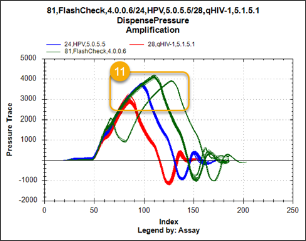
-
View the same data using Summary Plots tab, reporting Pmax only by MTU. Colored by assay. Now it is easier to compare Pmax (max pressure by MTU over time).
Note: Summary Plots tab
Select A Curve Type = DispensePressure
Select Command = Amplification
Measurement = Pmax
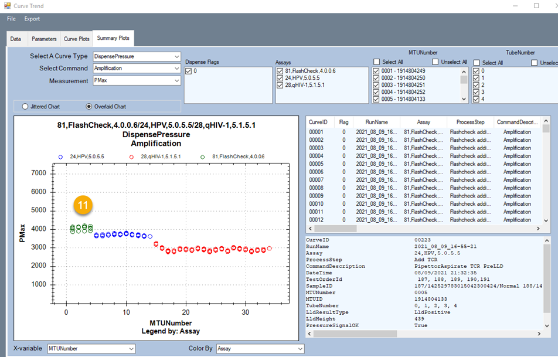
Graphing with Excel
To launch Excel:
Select , File > Open > Navigate to folder. If folder is empty, in file type selector change to All files (*.*), select File, click Open.
Excel may launch Text Import Wizard. If this option is not provided, select column A, then select Data > Text to Columns in the ribbon.
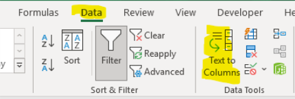
Text Import Wizard opens to Step 1 of 3. Select Delimited, then click Next.
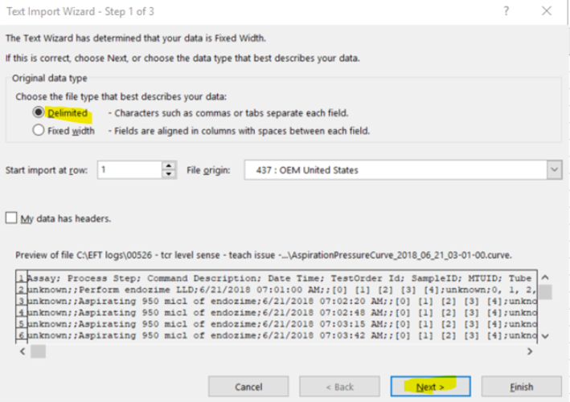
Text Import Wizard, Step 2 of 3 opens. Check Semicolon at upper left, and leave Treat consecutive delimiters as one unchecked.
Click Finish. Click Next to format additional columns.
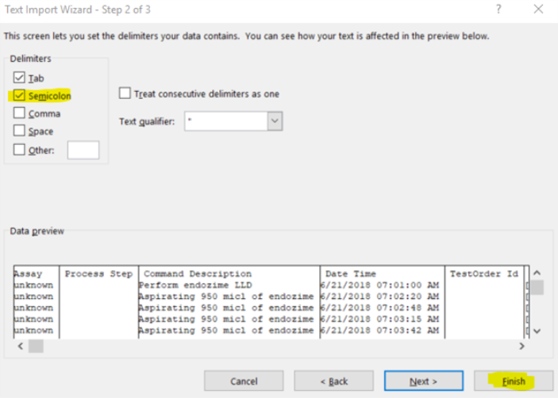
Find the values column, and select the data to be graphed.
Use line graph. Excel can handle only 255 lines.
 button at the top of the page to send feedback, comments, or change requests.
button at the top of the page to send feedback, comments, or change requests.